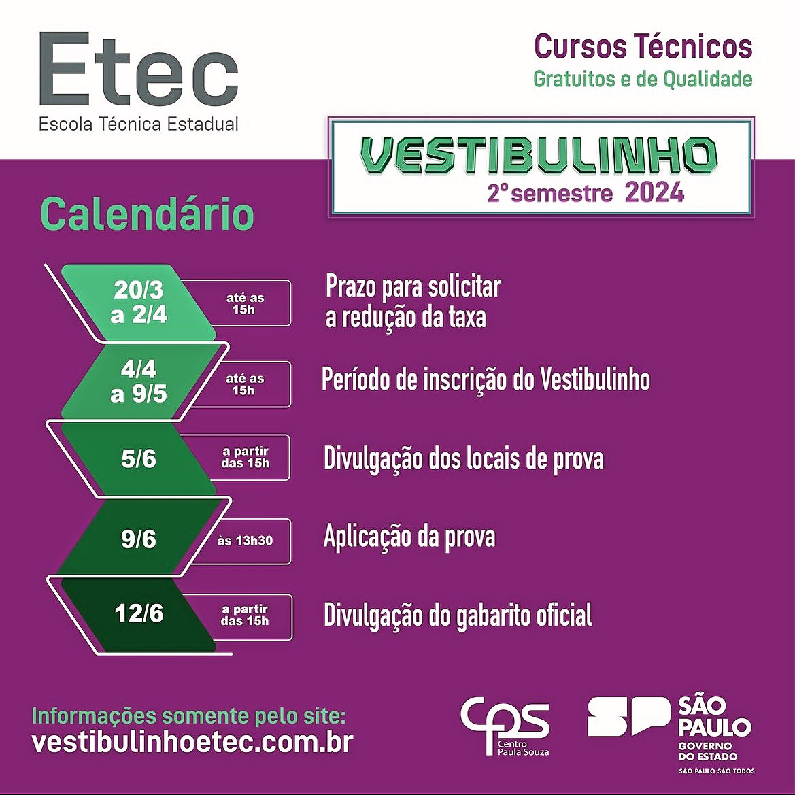
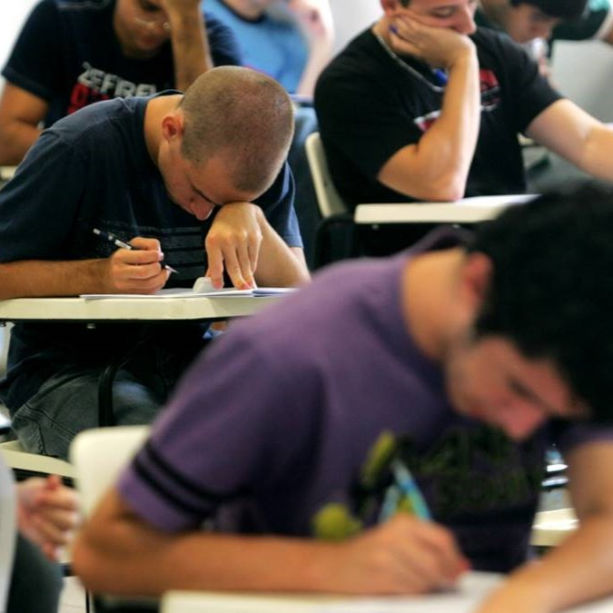
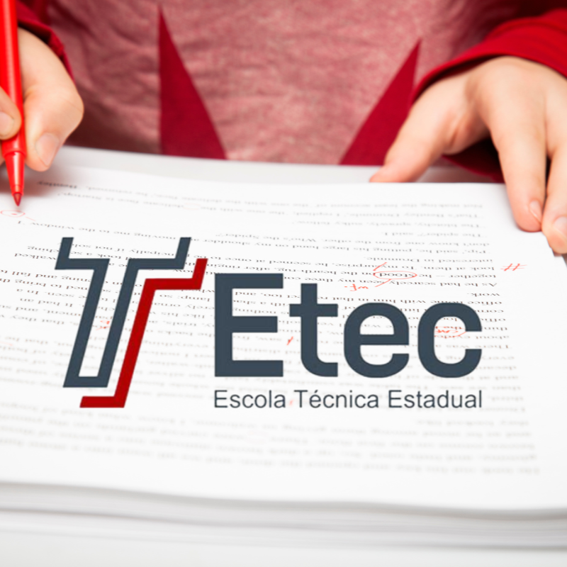

Informações sobre o Vestibulinho
O Exame do Processo Seletivo-Vestibulinho para o 2º semestre de 2024 será realizado no dia 09-06-2024, às 13h30, com duração de quatro horas. Os candidatos devem verificar o local do exame a partir de 05-06-2024, acessando o site vestibulinhoetec.com.br ou comparecendo à Etec ou Extensão de Etec onde pretendem estudar. A responsabilidade pela confirmação do local do exame é inteiramente do candidato.
Para realizar o exame, é necessário levar:
- Caneta esferográfica de tinta preta ou azul, lápis preto nº 2, borracha e régua
- Documento de identidade original, que pode ser:
- RG (ou RG digital ou nova CIN)
- CRNM (CIE/RNM/RNE) válido
- CNH (ou CNH digital)
- Documento expedido por Ordens ou Conselhos Profissionais válidos
- CTPS
- Passaporte brasileiro válido
Em caso de perda, roubo ou extravio do documento de identidade, o candidato deve levar e apresentar a via original e uma cópia do Boletim de Ocorrência Policial ou Declaração/Certidão de Extravio de Documento, datado de no máximo seis meses antes do dia do exame, justificando o fato ocorrido, bem como uma foto 3x4 recente. Tanto a cópia do Boletim de Ocorrência Policial ou da Declaração/Certidão de Extravio de Documento, quanto a foto 3x4 recente, serão retidas pelo Coordenador de Prédio após a identificação datiloscópica do candidato. Neste caso, o candidato que não apresentar, no momento do exame, o Boletim de Ocorrência Policial ou Declaração/Certidão de Extravio de Documento e a foto 3x4 recente, será impedido de realizar a prova.
O candidato portador do protocolo do documento de identidade (RG) ou da nova Carteira de Identidade Nacional (CIN), expedido pela Secretaria de Segurança Pública, ou do protocolo da Carteira de Registro Nacional Migratório (CRNM) (CIE/RNM/RNE) expedido pelo Departamento de Polícia Federal competente, deverá levar e apresentar obrigatoriamente, a via original e uma cópia da certidão/registro de nascimento, bem como uma foto 3x4 recente. Tanto a cópia da certidão/registro de nascimento, quanto a foto 3x4 recente, serão retidas pelo Coordenador de Prédio após a identificação datiloscópica do candidato. Neste caso, o candidato que não apresentar no momento do exame, a certidão/registro de nascimento e a foto 3x4 recente, será impedido de realizar a prova. A certidão de casamento substitui a certidão/registro de nascimento.



O Exame do Processo Seletivo-Vestibulinho para o 1º módulo - para os Cursos do Ensino Técnico (presencial, semipresencial e on-line), será constituído de uma prova com 50 questões-teste, cada uma com cinco alternativas (A, B, C, D, E) das quais apenas uma é correta. A prova avaliará as competências e habilidades previstas na Base Nacional Comum Curricular (BNCC) do Ensino Fundamental II nas áreas de Linguagens (Português), Matemática, Ciências Humanas (Geografia e História) e Ciências da Natureza. Contemplará também valores e ações que contribuam para a transformação da sociedade, tornando-a mais humana, socialmente justa e voltada para a preservação da natureza. As questões demandam as seguintes competências e habilidades do candidato:
- Interpretar diferentes tipos de textos
- Aplicar conhecimentos desenvolvidos no ensino fundamental para a compreensão da realidade e resolução de problemas
- Analisar criticamente argumentos
- Reconhecer e relacionar diferentes formas de linguagens, abordagens e técnicas de comunicação e expressão
- Avaliar ações e resoluções de acordo com critérios estabelecidos
Os gabaritos oficiais do Exame do Processo Seletivo-Vestibulinho para o 1º módulo, para o 2º módulo (cadastro de reserva para acesso às vagas remanescentes) e para os Cursos de Especialização técnica de nível médio, serão divulgados a partir das 15 horas do dia 12-06-2024, no site vestibulinhoetec.com.br. Qualquer questionamento acerca da prova, com a devida justificativa (proposta de resolução da questão), deverá ser encaminhado somente pela Internet, na seção “Fale Conosco" do site vestibulinhoetec.com.br, impreterivelmente, até as 15 horas do dia 13-06-2024.